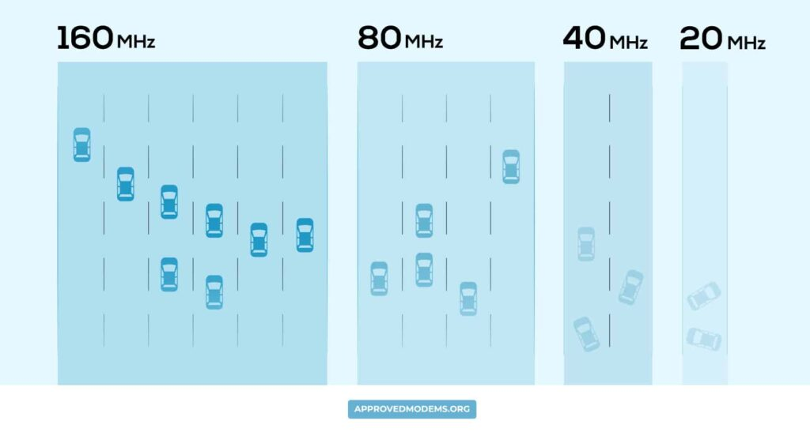
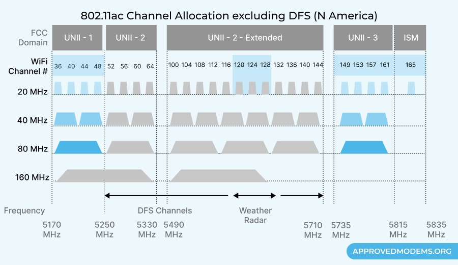

O Channel Width (ou “Largura de canal”) determina como o próprio nome diz, a largura de dados transmitidos em uma frequência. Quanto maior a largura, mais dados podem trafegar. Todavia, quanto maior a quantidade de roteadores na mesma largura, mais congestiona-se uma faixa específica.Pense nisso como uma rodovia. Se a estrada for larga, mais tráfego (dados) pode trafegar por ela. No entanto, quanto mais veículos (roteadores) nele, mais congestionado o tráfego fica. Observe a imagem abaixo de exemplificação:
 “Então se são 2 canais, seria melhor que apenas um de 20Mhz, correto?” Sim, mas só teoricamente.
É de fato melhor, mas isto não é verdade se os 2 canais estiverem congestionados. Um único canal de 20Mhz é o recomendado para “áreas congestionadas” e com bastante interferência.
Isso significa que, embora um canal de 40 MHz permita uma transferência mais rápida e velocidades mais altas, ele tem um desempenho ruim em áreas congestionadas.
Quando usar 20Mhz, 40Mhz ou 80Mhz na rede 2.4Ghz?
A resposta é simples: quando você está usando 2,4 GHz, 20 MHz é a melhor opção para 2,4 GHz. Na maioria das vezes, usar larguras largas em 2,4 GHz não é vantajoso.
As vantagens de largura de banda provavelmente superarão a perda de desempenho associada à interferência em canais sobrepostos. Áreas remotas com menos conexões Wi-Fi ou dispositivos podem ser uma exceção a essa regra.
Se você precisar de uma taxa de transferência de dados mais rápida, use 40 ou 80 MHz. No entanto, mesmo pouco tráfego em tal rede provavelmente causará congestionamento. Isso ocorre porque você não tem canais não sobrepostos suficientes para trabalhar.
Como resultado, é mais provável que você encontre interferência no canal.
Quando usar 20Mhz, 40Mhz, 80Mhz ou 160Mhz na rede 5Ghz?
A resposta é simples: quando você está usando 2,4 GHz, 20 MHz é a melhor opção para 2,4 GHz. Na maioria das vezes, usar larguras largas em 2,4 GHz não é vantajoso.
As vantagens de largura de banda provavelmente superarão a perda de desempenho associada à interferência em canais sobrepostos. Áreas remotas com menos conexões Wi-Fi ou dispositivos podem ser uma exceção a essa regra.
Se você precisar de uma taxa de transferência de dados mais rápida, use 40 ou 80 MHz. No entanto, mesmo pouco tráfego em tal rede provavelmente causará congestionamento. Isso ocorre porque você não tem canais não sobrepostos suficientes para trabalhar.
Como resultado, é mais provável que você encontre interferência no canal.